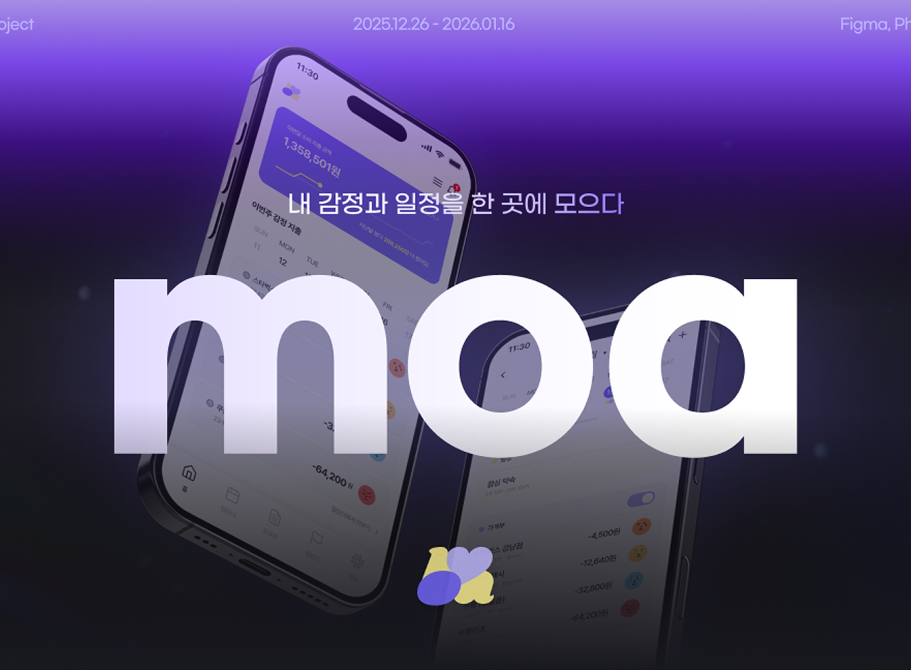
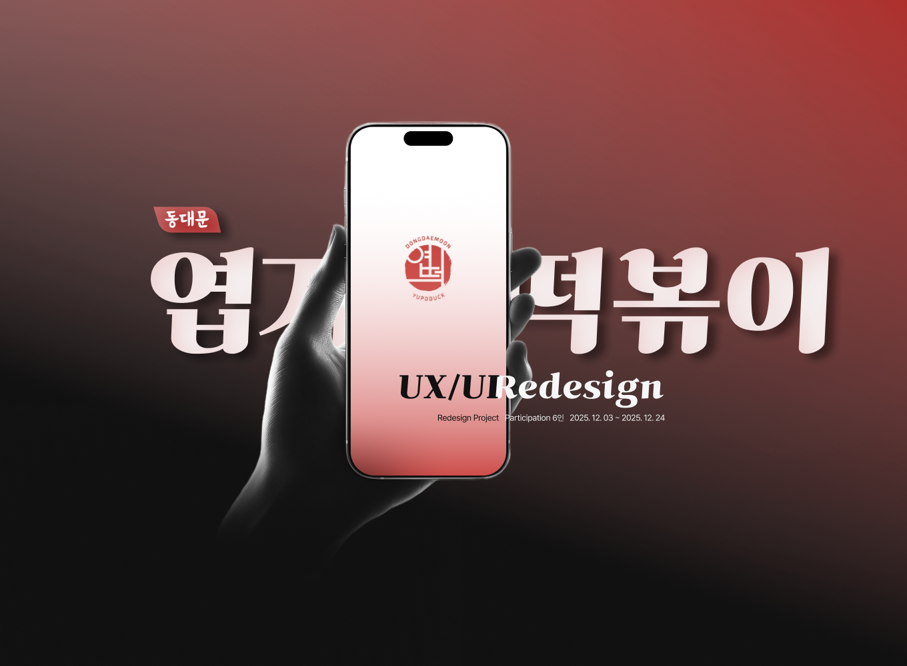

Projects
자산관리 신규서비스
기획 프로젝트
감정과 일정 데이터를 한곳에 모아 기록·분석하고, 이를 소비 패턴과 연결해 올바른 소비 습관 형성을 돕는
신규 자산관리 서비스 'moa'입니다.
‘moa’는 2026년 경제 트렌드로 주목받는 ‘필코노미(Fell +
conomy)’—감정이 소비를 주도하는 흐름—에 주목했습니다.
개인의 감정 상태가 자산 관리에 직접적인 영향을 미친다는 관점에서
출발해, 감정·일정
데이터를 시각화하여 자신의 상태와 소비의
상관관계를 직관적으로 인지할 수 있도록 설계했습니다.
또한
캐릭터와 보상 요소를 결합해 기록의 지속성과 몰입도를 높이고,
단순한 가계부를 넘어
‘감정 기반 소비 관리 경험’을
제공합니다. 데이터 기반의 자기 이해를 통해 감정에 휘둘리는
소비가 아닌,
스스로 통제 가능한 자산 흐름을 만들어가는 데
초점을 둔 신규 서비스 기획 프로젝트입니다.

UX/UI 분석 및
개선 프로젝트
기존 엽기떡볶이 앱의 전반적인 UX 문제를 분석하고, 새로운 UI를 통해
이를 개선한 리디자인 프로젝트입니다.
리서치와 설문을 통해 앱 디자인에 대한 불만과 엽떡의 양에 대한
부담감이라는 핵심 페인포인트를
도출했습니다.이를 바탕으로 보다 친절하고 섬세한 UX 흐름을 설계하고, 앱
진입부터 탐색·주문까지
이탈 없이 이어지는 새로운 시스템을
제안했습니다. 또한 사용성 테스트를 통해 재구성한 주문
과정, 메뉴
이해 구조, 정보 전달 방식을 검증하고 피드백을 반영해
완성도를 높였습니다. 브랜드의 기존 운영 방식은
유지하면서도 변화한 소비 환경에 맞는 새로운 경험을 제안하여,
사용자가 더 쉽고 부담 없이 주문할 수
있도록 서비스 흐름
전반을 개선했습니다.

VOC분석을 통한
솔루션 제안 프로젝트
"명확한 요금을 인지하지 못한다"라는 VOC를 기반으로, 투명한 정보 전달과 신뢰도 높은 사용 경험을
설계한 쏘카 UX 리디자인 프로젝트입니다.
리서치를 통해 사용자가 요금 구조를 직관적으로 이해하지 못하고,
이용 과정 전반에서 최종 결제 금액에
대한 불안과 혼란을
느낀다는 핵심 문제를 정의했습니다. 특히 이용 전·중·후에 안내되는
요금 정보가
분산되어 있어 금액 흐름을 한눈에 파악하기
어렵다는 점에 주목했습니다. 이를 해결하기 위해 요금 안내
구조를
재정비하고 UX Writing과 Micro Copy를 개선해 정보의
명확성을 높였습니다. 또한 실시간 요금
계산 기능을 제안해 변동
금액을 즉시 확인할 수 있도록 설계함으로써, 최종 결제에
대한 부담을 줄이고
서비스에 대한 신뢰를 강화하는 것을 목표로
했습니다.

핵심 기능 집중
개선 프로젝트
현재의 리뷰 시스템에서 사용자들이 체감하는 리뷰 신뢰도 문제를 탐구한 프로젝트입니다.
인터뷰와 사용자 조사를 통해 리뷰에서 핵심 정보를 빠르게 파악하기
어렵고, 필요한 정보를 선별하는
과정에서 피로도가 높아진다는
문제를 도출했습니다. 이를 해결하기 위해 리뷰를 Textless의
시각적 요소 기반리뷰 시스템으로 재구성했습니다. 리뷰에서
보고싶은 정보들을 기준으로 한눈에
이해할 수 있도록
설계하고, 신뢰도가 높은 사진리뷰의 점유율을 높일 수 있도록 리뷰
업로드 프로세스를
단순화 하여, 리뷰를 더 빠르게
탐색·비교할 수 있고, 작성자는 신뢰도 높은 리뷰를 쉽게 작성할 수
있는
경험을 제공합니다. 리뷰의 이해 가능성과 신뢰 형성
과정을 중심으로 리뷰 시스템을
재정의한 미니 프로젝트입니다.